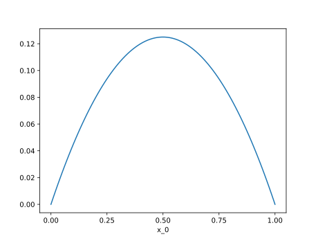
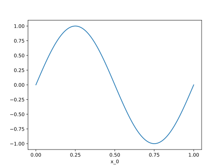
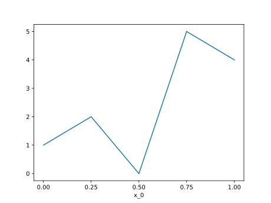

Functions
A function in Nutils is a mapping from a topology onto an n-dimensional
array, and comes in the form of a functions: nutils.function.Array object. It
is not to be confused with Python's own function objects, which operate on the
space of general Python objects. Two examples of Nutils functions have already
made the scene: the geometry geom, as returned by nutils.mesh.rectilinear,
and the bases generated by Topology.basis(). Though seemingly different,
these two constructs are members of the same class and in fact fully
interoperable.
The nutils.function.Array functions behave very much like numpy.ndarray
objects: the functions have a nutils.function.Array.shape,
nutils.function.Array.ndim and a nutils.function.Array.dtype:
geom.shape
# (1,)
basis.shape
# (5,)
geom.ndim
# 1
geom.dtype
# <class 'float'>
The functions support numpy-style indexing. For example, to get the first
element of the geometry geom you can write geom[0] and to select the first
two basis functions you can write
plot_line(basis[:2])

The usual unary and binary operators are available:
plot_line(geom[0]*(1-geom[0])/2)

Several trigonometric functions are defined in the nutils.function module.
An example with a sine function:
plot_line(function.sin(2*geom[0]*numpy.pi))

The dot product is available via nutils.function.dot. To contract the basis
with an arbitrary coefficient vector:
plot_line(function.dot(basis, [1,2,0,5,4]))

Recalling the definition of the discrete solution, the above is precisely the way to evaluate the resulting function. What remains now is to establish the coefficients for which this function solves the Laplace problem.
Arguments
A discrete model is often written in terms of an unknown, or a vector of
unknowns. In Nutils this translates to a function argument,
nutils.function.Argument. Usually an argument is used in an inner product
with a basis. For this purpose there exists the nutils.function.dotarg
function. For example, the discrete solution can
be written as
ns.u = function.dotarg('lhs', ns.basis)
with the argument identified by 'lhs' the vector of unknowns \( \hat{u}_n
)).